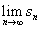

This device cannot display Java animations. The above is a substitute static image
1. Arithmetic sequence
The applet shows the sequence defined by sn = 2 + 3(n - 1). This is called an arithmetic sequence and each term of the sequence is found by adding a constant amount (e.g., 3 in this example) to the preceeding element. The general formula for an arithmetic sequence is sn = s1 + d(n - 1), where s1 is the first term and d is the common difference (i.e., the amount added to get the next term). The partial sum of the first 10 terms is shown in the upper left corner of the graph, and you can change the number of terms by moving the max n slider or typing in the max n input box.
One of the issues that we are concerned with when working with sequences is what happens to the values of the terms when n heads to infinity. In other words, does

have a value, or does
sn head off to infinity or jump around as
n gets big? If there is a limit, we say that the sequence
converges or is
convergent. If this limit does not exist, the sequence
diverges or is
divergent. Obviously the arithmetic sequence diverges, because the terms keep getting bigger.
2. Geometric sequence
Select the second example from the drop down menu, showing a geometric sequence defined by
sn = 2
n
In a geometric sequence each term is a constant multiple of the previous term (the multiple here is 2). The general form of a geometric sequence is
sn =
s1rn - 1
where
r is the common ratio (i.e., the amount that each term is multiplied by to get the next term). Obviously,
r = 1 and
r = 0 are not useful cases (both just give a constant value for all terms). It is clear from the graph that the example sequence is divergent, because the terms keep getting bigger.
3. Another geometric sequence
Select the third example, showing another geometric sequence with a common ratio of 1/2. Does this one converge? The terms get closer and closer to zero, so this sequence does converge. Geometric sequences converge if the common ratio is between 0 and 1, and diverge if the common ratio is greater than 1.
4. Alternating geometric sequence
Select the fourth example, showing another geometric sequence with a negative common ratio. Note that the terms alternate on the positive and negative side of the axis. This sequence also converges towards 0, so we can extend our knowledge of geometric sequence convergence to say that the sequence converges if |r| < 1.
Explore
You can experiment with your own sequences by typing in a rule, using n as the variable.
Other 'Sequences and Series' topics
(C) 2011 Copyright Math Open Reference.
All rights reserved